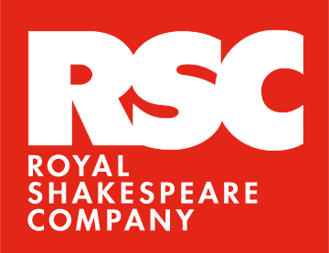
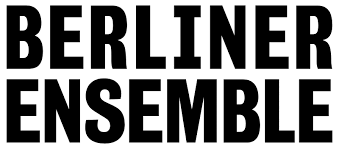
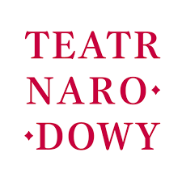
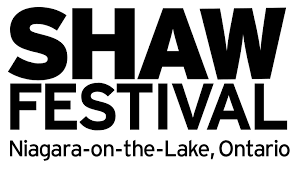
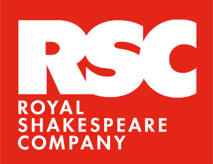
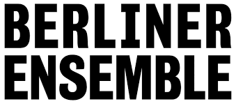
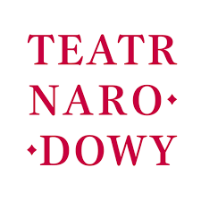
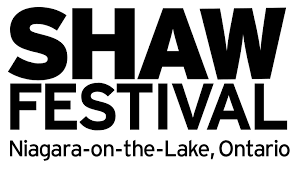

Patronage
Collaborators


Funders


Acknowlegement
 









Science on Stage
Green Curtain
Green Curtain is an innovative environmental project developing lignin-based filters and wipes to prevent harmful chemicals from cosmetics, decorations, and costume washing from entering theatre wastewater. By using bio-based and biodegradable materials, Green Curtain helps protect vulnerable ecosystems, promotes cleaner water, and repurposes large industrial by-products, supporting the circular economy.
Breath of Carbon
Breath of Carbon is an XR interactive solo performance that merges science and art to engage online audiences. Using motion capture and digital technologies, it visualizes the carbon cycle and highlights sustainable CO₂ capture’s impact on agriculture, employment, and future generations. The project advances brand development and image creation by showcasing innovative art-tech collaboration that makes complex science accessible and inspiring.
About us
Metaria ry is a non-profit association founded in 2015 by Tuomo Karvonen, Matti Luhtala, and Jyrki Pylväs. Metaria promotes and explores new forms of performing arts in digital environments.
Showcasing innovative tech-driven performance art nationally and internationally.
Board of Directors 2024-2025
Tero Heinämäki
Heidi Naakka
Ekaterina Osmekhina
Daria Robertson
David Robertson (chair)
Members
Tuuli Ahonen
Sefi Carmel
Јoh Оrengo
Jouni Ruuth
Sofia Stupenkova
Erik Söderblom
Gautam Vishwanath
Contact
FIN 2761325-3
trustee@metaria.org
New Writing
Translucence
In a fractured future where Earth’s stability has long since crumbled, exiled scientist Dr. Mara Solberg rediscovers a forgotten innovation capable of sustaining life in the harshest of worlds. Her pursuit of this breakthrough draws the attention of powerful forces determined to erase it from history. Fleeing across the void to a remote settlement on an uncharted world, Mara must adapt to an alien environment, evade those who would see her silenced, and confront the shadow of her own ambition. Translucence fuses live performance with real-time digital scenography, layered soundscapes, and cinematic world-building — where the physical stage merges seamlessly with a living, virtual environment that evolves with the story.
Eurojob
An online-born stage drama about pride, distance, and the fight to be heard.
A father. A son. One phone call. Six hours until eviction.
In a bedsit, a once-charismatic hustler whose quick wit and bravado now barely conceal his exhaustion and loneliness dials the number he’s avoided for years. What begins as a plea for help becomes a fierce duel over who has forgiven who the most—a raw, funny, and devastating argument that strips away decades of silence.
Written for one actor to deliver a virtuoso, multifaceted performance, the play demands every shade of the actor’s craft: shifting from razor-sharp comedy to aching vulnerability in the space of a breath.
Born in the digital space through live-streamed readings and virtual rehearsals across borders, Eurojob is a one-act monologue to be staged in theatres and online. The piece fuses the intimacy of a video call with the immediacy of live performance, inviting audiences into a room where love, pride, and stubbornness collide.
First Aid, Last Orders
On a cruise ship docked in Helsinki, a supervisor convinced he’s seriously ill drives his cleaning crew to distraction. One sharp-witted cleaner poses as a doctor, dishing out absurd cures while a surprise inspection hurtles closer. To survive the day, the immigrant crew must outwit the chaos before it sinks them all — a sharp-tongued modern farce inspired by Molière’s The Imaginary Invalid. This professional stage production blends live theatre with real-time digital elements — streaming to online audiences, incorporating live video feeds from hidden corners of the ship, and letting viewers aboard and at home experience the same rising storm of comedy, panic, and survival from multiple perspectives.